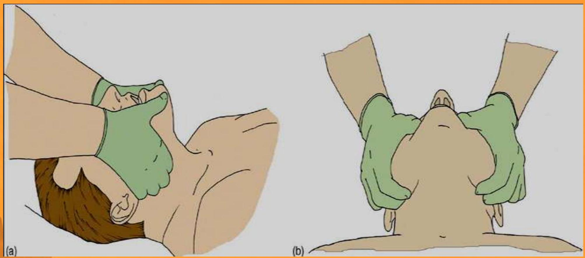

Cardiopulmonary Resuscitation
MANALI H. SOLANKI
S.Y M.SG.NURSING
Л G COLLEGE OF NURSING
INTRODUCTION
- Cardiopulmonary resuscitation (CPR) is a lifesaving technique useful in many emergencies, including heart attack or near drowning, in which someone's breathing or heartbeat has stopped.
ANATOMY AND PHYSIOLOGY:
- Cardio Pulmonary Resuscitation is a technique of basic life support for oxygenating the brain and heart until appropriate, definitive medical treatment can restore normal heart and ventilatory action.
Objectives of CPR:
- To maintain an open and clear airway (A).
- To maintain breathing by external ventilation (B).
- To maintain Blood circulation by external cardiac massages (C).
- To save life of the Patient.
- To provide basic life support till medical and advanced life support arrives.
Cardiac Arrest
Causes include:
- Ventricular fibrillation (VF)
- Ventricular tachycardia (VT)
- Asystole
- Pulse less electrical activity
Respiratory Arrest
This may be result of following:
- Drowning
- Stroke
- Foreign body in throat
- Smoke inhalation
- Drug overdose
- Suffocation
- Accident, injury
- Coma
- Epiglottis paralysis.
Aims of CPR:
- To restore effective circulation and ventilation.
- To prevent irreversible cerebral damage due to anoxia. When the heart fails to maintain the cerebral circulation for approximately four minutes the brain may suffer irreversible damage.
CPR procedure
SEQUENCES OF PROCEDURES PERFORMED TO RESTORE THE CIRCULATION OF OXYGENATED BLOOD AFTER A SUDDEN PULMONARY AND/OR CARDIAC ARREST
CHEST COMPRESSIONS AND PULMONARY VENTILATION PERFORMED BY ANYONE WHO KNOWS HOW TO DO IT, ANYWHERE, IMMEDIATELY, WITHOUT ANY OTHER EQUIPMENT
CPR Steps Overview
- Approach safely
- Check response
- Shout for help
- Open airway
- Check breathing
- Call 108
- 30 chest compressions
- 2 rescue breaths
Step 1: Approach Safely
APPROACH SAFELY!
WATCH OBSERVE
Step 2: Check Response
Shake shoulders gently
Ask "Are you all right?"
If he responds
- Leave as you find him.
- Find out what is wrong.
- Reassess regularly.
Step 3: Shout for Help
Step 4: Open Airway
Head tilt and chin lift
- lay rescuers
- non-healthcare rescuers
No need for finger sweep unless solid material can be seen in the airway
Head tilt, chin lift + jaw thrust
Step 5: Check Breathing
- Look, listen and feel for NORMAL breathing
- Do not confuse agonal breathing with NORMAL breathing
- Occurs shortly after the heart stops in up to $40\%$ of cardiac arrests
- Described as barely, heavy, noisy or gasping breathing
- Recognise as a sign of cardiac arrest
Step 6: Call Emergency Services (e.g., 108/112)
If the victim is not breathing normally, activate emergency medical services and get an AED if available.
Step 7: 30 Chest Compressions
CHEST COMPRESSIONS
- Place the heel of one hand in the centre of the chest
- Place other hand on top
- Interlock fingers
- Compress the chest
- Rate $100 \mathrm{~min}^{-1}$
- Depth $4 - 5 \mathrm{~cm}$ (1.5 to 2 inch)
- Equal compression : relaxation
- When possible change CPR operator every 2 min
Step 8: 2 Rescue Breaths
- Pinch the nose
- Take a normal breath
- Place lips over mouth
- Blow until the chest rises
- Take about 1 second
- Allow chest to fall ** Repeat
RECOMMENDATIONS:
- Tidal volume $500 - 600 \mathrm{ml}$
- Respiratory rate give each breaths over about 1s with enough volume to make the victim's chest rise
- Chest-compression-only continuously at a rate of 100 min
CONTINUE CPR
Continue CPR (30 compressions: 2 breaths) until:
- Qualified help arrives and takes over.
- The victim starts breathing normally.
- You become exhausted.
POSSIBLE COMPLICATIONS
- Coronary vessel injury
- Diaphragm injury
- Hemopericardium
- Hemothorax
- Interference with ventilation
- Liver injury
- Myocardial injury
- Pneumothorax
- Rib fractures
- Spleen injury
- Sternal fracture
MEDICAL MANAGEMENT
Adrenaline
- Adrenaline (epinephrine) is the main drug used during resuscitation from cardiac arrest.
Atropine
- Atropine as a single dose of 3 mg is sufficient to block vagal tone completely and should be used once in cases of asystole. It is also indicated for symptomatic bradycardia in a dose of 0.5 mg 1 mg .
Amiodarone
- It is an antiarrhythmic drug.
NURSING MANAGEMENT
- Maintains airway patency with use of airway adjuncts as required (suction, high flow oxygen with O 2 or bag valve mask ventilation).
- Assist with intubation and securing of ETT
- Inserts gastric tube and/or facilitates gastric decompression post intubation as required.
- Assists with ongoing management of airway patency and adequate ventilation
- Supports less experienced staff by coaching/guidance e.g. drug preparation
- If a shockable rhythm is present (VF/VT) ensure manual defibrillator pads are applied and connected.
- If CPR is in progress, prepare and independently double check and label 3 doses of adrenaline
- Prepare and administer IV fluids
- Document medications administered (including time)